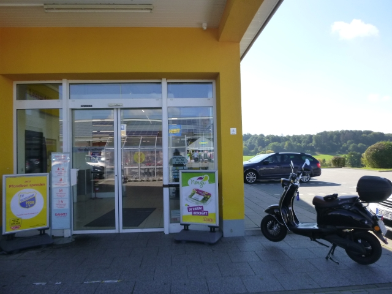
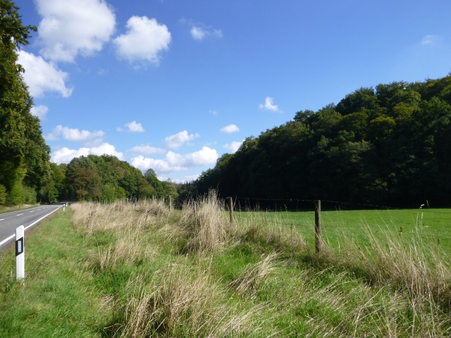
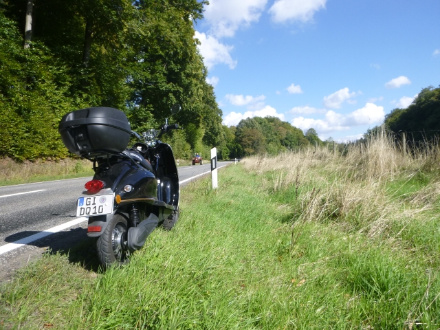
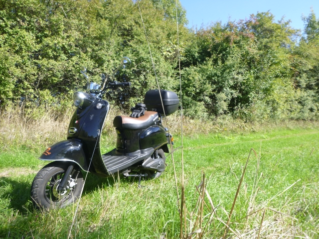
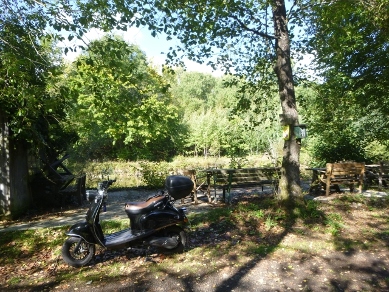
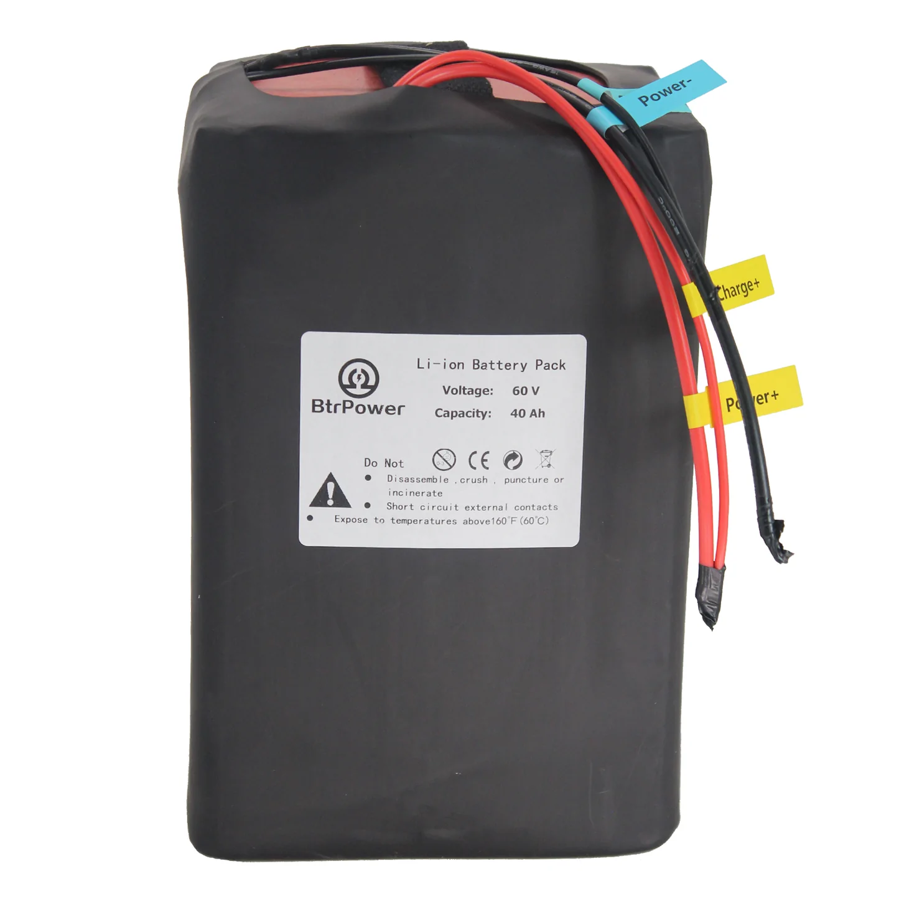

Heut stehen zwei Einkaufsfahrten an, die ich mit dem Elektro-Roller auf wunderbare Weise verbinden werde. Laubach und Flensungen liegen ja auch nicht sooo weit auseinander, sodass ich mit der Reichweite des kleinen Stromers wohl hinkommen werde.
Zuerst geht es bei strahlendem Sonnenschein in Richtung Laubach. Aber so schön die Sonne auch scheint, schafft sie es bisher nicht, den Vogelsberg auf mehr als 10 °C zu erwärmen. Aber was soll’s, ich bin dick genug angezogen und kann die Fahrt trotzdem geniessen.
Allerdings frage ich mich, was die aktuellen Temperaturen mit den Bleiakkus des Rollers anstellen, und welche Wirkung das auf die Reichweite hat. Bisher sieht alles normal aus, der Roller fährt wie immer und die Kapazitätsanzeige sinkt nicht schneller als gewohnt.

Hier im Netto-Markt im Laubacher Industriegebiet habe ich den ersten Einkauf erledigt und das Topcase bis in den letzten Winkel gefüllt.

Die Rückfahrt durch den Laubacher Wald ist geprägt durch wunderbare Landschaften wie dieses kleine Tal hier.

Obwohl morgen schon Oktober ist, zeigt sich im Laubacher Wald noch keine Spur des von mir so geliebten Indian Summers.

Auch eine klitzekleine Enduro-Einlage gönne ich uns heute.

Jetzt habe ich auch den Einkauf in Flensungen erledigt und auch das Gepäckfach unter der Sitzbank prall gefüllt. Einen kleinen Umweg lege ich noch ein, um nach langer Zeit mal wieder diesen ehemaligen Bergwerksteich am Ortsrand zu besuchen. Der örtliche Angelverein hat das Gelände gepachtet und durch gute Beziehungen konnten wir vor ca. 15…20 Jahren hier öfter schöne Feste mit gegräucherten Forellen mit unserer damals sehr aktiven Sportschützengruppe feiern. Lang ist’s her, aber schön war’s. Ist schon toll, so gemütlich am Wasser zu sitzen.
Auf den letzten 6 Kilometern gehen jetzt aber meine Bleiakkus stark in die Knie! Nach 33 gefahrenen Kilometern wird der Roller schon ordentlich ausgebremst und zur Schleichfahrt gezwungen. Ich schaffe es noch bis Stockhausen so einigermassen normal zu fahren, aber dann wird’s richtig eng. Etwa 100 m muss ich an einer kleinen Steigung neben dem Roller herlaufen, aber ich schaffe es immerhin, elektrisch in die Hofeinfahrt zu kommen. Puh, das war tatsächlich äusserst knapp. Aber klar, Akkus mögen keine Kälte und 10°C sind eben keine 30°C. Da muss ich meinen Radius in der kalten Jahreszeit ein wenig reduzieren.
Oder ich brauche mehr Akku-Kapazität, also einen mindesten 40 Ah starken Lithium-Ionen-Akku. Vielleicht so etwas: 
Gibts bei https://www.btrpower.com. Mit einem Akku wie diesem würde mein eRetroStar nochmal ein gutes Stück brauchbarer.Das würde mehr Reichweite durch die höhere Kapazität bedeuten und dabei noch ein kleiner Tick mehr Speed und Spritzigkeit durch die etwas höhere Spannung des 17s-Akkus. Und leichter würde die Fuhre damit auch noch. Die Unterbringung wird wohl lösbar sein, wenn auch etwas aufwendig. Aber das kann mich nicht schrecken - schliesslich gibt es da noch die mechanische Werkstätte in Ilsdorf.